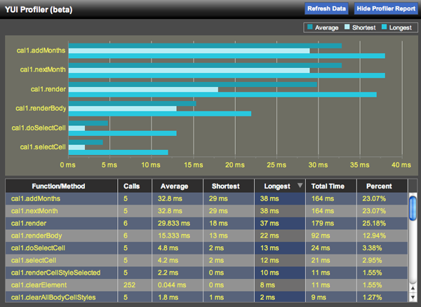

<?php 
$title="Yahoo! UI Library: ProfilerViewer Control";
$section="profilerviewer";
$component="ProfilerViewer Control";
$highlightSyntax = true;
$releasenotes = true;
include "../inc/header.inc";
?>

<div id="yui-main">
<div class="yui-b">
  <div class="yui-ge">
      <div class="yui-u first">
	  
  <div id="promo" class="component">
    <h1>Yahoo! UI Library: <?php echo $component; ?></h1>

<p>YUI's <a href="http://developer.yahoo.com/yui/profiler/">Profiler</a> is a headless system for generating profiling data about the JavaScript functions that comprise your web application.  The ProfilerViewer Control detailed here is used in combination with Profiler to provide rich visualizations of your profiling data &mdash; both graphically (using the <a href="http://developer.yahoo.com/yui/charts/">Charts Control</a>) and in tabular format (using <a href="http://developer.yahoo.com/yui/datatable/">DataTable</a>).</p>

<p></p>

<p><strong>Note:</strong> Be sure to reference the <a href="http://developer.yahoo.com/yui/profiler/">Profiler User's Guide</a> for full information about collecting profiling data.  ProfilerViewer is merely a window into the data that Profiler collects on your behalf.</p>

<div>
    <h4>On This Page:</h4>
    <ul>
      <li><a href="#start">Getting Started</a></li>
      <li><a href="#firebug">ProfilerViewer versus the Firebug Profiler</a></li>
      <li><a href="#config">Configuring ProfilerViewer</a></li>
      <li><a href="#events">Making Use of ProfilerViewer Events</a></li>
      <li><a href="#skinning">Skinning the ProfilerViewer Console</a></li>
      <li><a href="#mobile">YUI on Mobile Devices</a></li>
      <li><a href="#support">Support &amp; Community</a></li>
	  <li><a href="#filingbugs">Filing Bugs and Feature Requests</a></li>
    </ul>
  </div>

<?php
include('../inc/quicklinks.inc');
?>
    
  </div>

  <h2 id="start" class="first">Getting Started</h2>
  <p>The ProfilerViewer Control uses the <a href="http://developer.yahoo.com/yui/yuiloader/">YUI Loader</a> (which includes the <a href="http://developer.yahoo.com/yui/yahoo/">Yahoo Global Object</a>), <a href="http://developer.yahoo.com/yui/event/">Event Utility</a>, <a href="http://developer.yahoo.com/yui/dom/">Dom Collection</a>, <a href="http://developer.yahoo.com/yui/element/">Element Utility</a>, and <a href="http://developer.yahoo.com/yui/profiler/">Profiler</a>.  It will make minor cosmetic use of <a href="http://developer.yahoo.com/yui/dragdrop/">Drag and Drop</a>, if present.  When the ProfilerViewer console is rendered, it pulls in the <a href="http://developer.yahoo.com/yui/datatable/">DataTable Control</a> and (if enabled) the <a href="http://developer.yahoo.com/yui/charts/">Charts Control</a>; these latter dependencies do not need to be on the page in advance, and it's best to let ProfilerViewer bring them in unless you're using them on the page already.</p>
  
  <pre><textarea name="code" class="HTML" cols="60" rows="1">
&lt;!-- Dependencies --&gt; 
&lt;script type="text/javascript" src="http://yui.yahooapis.com/<?php echo($yuiCurrentVersion);?>/build/yuiloader/yuiloader-min.js" &gt;&lt;/script&gt;
&lt;script type="text/javascript" src="http://yui.yahooapis.com/<?php echo($yuiCurrentVersion);?>/build/dom/dom-min.js" &gt;&lt;/script&gt;
&lt;script type="text/javascript" src="http://yui.yahooapis.com/<?php echo($yuiCurrentVersion);?>/build/event/event-min.js" &gt;&lt;/script&gt;
&lt;script type="text/javascript" src="http://yui.yahooapis.com/<?php echo($yuiCurrentVersion);?>/build/element/element-beta-min.js" &gt;&lt;/script&gt;
&lt;script type="text/javascript" src="http://yui.yahooapis.com/<?php echo($yuiCurrentVersion);?>/build/profiler/profiler-beta-min.js" &gt;&lt;/script&gt;

&lt;!-- Minor optional dependency --&gt; 
&lt;script type="text/javascript" src="http://yui.yahooapis.com/<?php echo($yuiCurrentVersion);?>/build/dragdrop/dragdrop-min.js" &gt;&lt;/script&gt;
</textarea></pre>

<?php
include "../inc/include-notice.inc";
?>

<p>With the Profiler and the ProfilerViewer Control loaded on the page, you can begin profiling your code and exploring the profiling data visually. After you've configured Profiler (see its <a href="http://developer.yahoo.com/yui/profiler/">User's Guide</a> for more on how to use Profiler to profile objects, functions and constructors), you can instantiate ProfilerViewer with the following two (optional) arguments: </p>

<ol>
  <li><strong>Target Element:</strong> A string element ID or object element reference for the DOM element into which your ProfilerViewer console should be rendered.  If you omit or pass a value a value of <code>null</code> or <code>""</code> for this argument, ProfilerViewer will create a new element as the first child of the document body to house the console.</li>
  <li><strong>Options:</strong> An optional object containing configuration information for your ProfilerViewer instance; see the <a href="#config">Configuring ProfilerViewer section</a> below for the full list of configuraton attributes you can include here.</li>
</ol>

<p>Setting up ProfilerViewer in a simple use case, given an object <code>myObject</code> that you want to profile, would look like this:</p>

<textarea name="code" class="JScript" cols="60" rows="1">//Tell profiler to profile the object:
YAHOO.tool.Profiler.registerObject("myObject", myObject);

var pv = new YAHOO.widget.ProfilerViewer("profilerDiv", {
	base: "/2.5.0/build/" //the base directory for YUI files
    					  //on your server
});</textarea>

<p>The code above would render a ProfilerViewer console into a div whose ID is <code>profilerDiv</code>, allowing you to explore the performance profile of <code>myObject</code>.</p>

<p>If you use the default settings, ProfilerViewer will load initially in minimized form, showing just a launcher that can be used to reveal the full viewing console. In its initial state, the launcher looks like this:</p>

<p></p>

<p>At this point, you've put ProfilerViewer's base dependencies on the page. Once the <em>View Profiler Data </em>button is clicked, ProfilerViewer uses YUI Loader to retrieve additional dependencies including:</p>
<ul>
  <li><a href="http://developer.yahoo.com/yui/datasource/">The DataSource Utility</a></li>
  <li><a href="http://developer.yahoo.com/yui/datatable/">The DataTable Control</a></li>
  <li><a href="http://developer.yahoo.com/yui/json/">The JSON Utility</a> (optional, for Charts)</li>
  <li><a href="http://developer.yahoo.com/yui/charts/">The Charts Control</a> (optional)</li>
</ul>
<p>Once YUI Loader has brought in these dependencies, the full ProfilerViewer UI is rendered; if <code>showCharts</code> is set to <code>true</code> (as it is by default), the console looks like this:</p>
<p></p>
<p>Keep in mind that the Profiler, once you load it and specify functions for it to profile, <em>is always running</em>. ProfilerViewer never stops that process. You can continue to interact with the page and exercise the functions that you're profiling; Profiler will continue to track that data, and you can refresh the information in the ProfilerViewer console by clicking the <em>Refresh Data</em> button or by hiding/showing the console.</p>

<h2 id="firebug">ProfilerViewer Versus the Firebug Profiler</h2>

<p>One question you may ask yourself about the ProfilerViewer is how it differs from the profiler built into Firebug &mdash; and why would you use this control, which requires instantiation in your code, rather than Firebug, which can so easily be called up on demand.</p>

<p>The short answer is that YUI's Profiler and ProfilerViewer aren't a replacement for Firebug, and we use Firebug's profiler a lot in our own development.  But here are some use cases where it's handy to have another option:</p>
<ul>
  <li><strong>Browsers other than Firefox: </strong>ProfilerViewer can run in all A-grade browsers; because there are wide performance differences between browsers, it's helpful to have some &quot;common ground&quot; in profiling to get a sense of how your app is running in the browsers you care most about.</li>
  <li><strong>Profiling minified code:</strong> Firebug's built-in profiler has some difficulties profiling code that has been minified (as by <a href="http://developer.yahoo.com/yui/compressor/">YUI Compressor</a>). In cases where Firebug's profiler is providing unreliable results, YUI Profiler/ProfilerViewer can serve as an alternative.</li>
  <li><strong>Profiling specific objects, functions, and constructors: </strong>YUI's Profiler (and the ProfilerViewer) can be focused on specific objects or functions, making it somewhat easier to examine just the parts of your application that you're curious about.</li>
</ul>
<p>In short, Firebug's profiler is an on-demand workhorse; this alternative is designed to provide an alternative for cross-browser and highly focused code profiling.</p>
<h2 id="config">Configuring ProfilerViewer</h2>

<p>ProfilerViewer is configured via the second argument to its constructor.  This optional argument comprises an object containing one or more of the following fields:</p>

<div class="apisummary">
<table>
    <thead>
		<tr>
			<th>Configuration Option</th>
			<th>Purpose</th>
		</tr>
    </thead>
	<tbody>
        <tr class="odd">
            <td>base</td>
            <td>(string) The base path that YUI Loader should use in bringing YUI components in dynamically.  <strong>Default:</strong> null (YUI Loader will load YUI files as needed from <code>yui.yahooapis.com</code>).</td>
        </tr>
        <tr>
            <td>chartSeriesDefinitions</td>
            <td>(object) If you wish to customize the look and feel of ProfilerViewer's chart instance, you will want to manipulate the <code>chartSeriesDefinitions</code> attribute.  Check out the source code for ProfilerViewer for the full default definition and use that as a starting point.  (This is not a common attribute to set; it is only relevant if you need to make changes to the visual characteristics of the console's chart.)</td>
        </tr>
        <tr class="odd">
            <td>chartStyle</td>
            <td>(obj) A style object passed into the ProfilerViewer's chart instance to set things like font color and background color.  As with <code>chartSeriesDefinitions</code>, it is unlikely that you would touch this attribute unless you were re-skinning ProfilerViewer.  Check out the source code for ProfilerViewer to review the default content for this property in the event you need to modify it.</td>
        </tr>
        <tr>
            <td>filter</td>
            <td>(function) A function used to filter Profiler data prior to display; see the "Reporting Results" section of the <a href="http://developer.yahoo.com/yui/profiler/#reportingresults">Profiler User's Guide</a> for usage of the <code>filter</code> attribute.  A sample filter that would limit ProfilerViewer to displaying data for functions that have been called at least once would look as follows:

<p><pre>function(o) {
   return (o.calls>0);
}</pre></p>

<strong>Default:</strong> <code>null</code>.
            
            </td>
        </tr>

        <tr class="odd">
            <td>maxChartFunctions</td>
            <td>(integer) The maximum number of functions to display in the bar chart at the top of the ProfilerViewer console. Bigger numbers take up more vertical space.  <strong>Default</strong>: <code>6</code>.</td>
          
        </tr>
        
        <tr>
            <td>swfUrl</td>
            <td>(string) The relative or fully qualified path to the YUI Charts Control SWF file.  Note that this path is <em>relative to the HTML page being viewed.</em> <strong>Default</strong>: <code>http://yui.yahooapis.com/<?php echo $yuiCurrentVersion; ?>/build/charts/assets/charts.swf</code>.</td>
        </tr>

		
        <tr class="odd">
            <td>showChart</td>
            <td>(boolean) If false, the YUI Charts component is not employed to visualize profile data; the console in that case consists solely of the DataTable. <strong>Default</strong>: <code>true</code>.</td>
        </tr>

        <tr class="">
            <td>sortedBy</td>
            <td>(object) Configuration used to specify how the ProfilerViewer's DataTable instance should be sorted upon first being viewed. Avalable keys for sorting include <code>total</code>, <code>avg</code>, <code>min</code>, <code>max</code>, and <code>pct</code>. <strong>Default</strong>: <code>{key:"total", dir:"yui-dt-desc"}</code>.</td>
        </tr>

        <tr class="odd">
            <td>tableHeight</td>
            <td>(string) Use this attribute to specify an alternative maximum height for the ProfilerViewer's DataTable (be sure to specify both the value and the units; eg, <code>"150px"</code>.). <strong>Default</strong>: <code>15em</code>.</td>
        </tr>

        <tr class="">
            <td>visible</td>
            <td>(boolean) If true, the ProfilerViewer will render its full canvas immediately upon instantiation, drawing in DataTable and (if used) Charts.  By default, ProfilerViewer will render only a small launcher console at instantiation and will allow you to defer the loading of DataTable and Charts until you've interacted with the page and gathered a baseline of profiling data.  This helps reduce the impact that ProfilerViewer's dependencies have on the performance of the code that you're profiling. <strong>Default</strong>: <code>false</code>.</td>
        </tr>

	</tbody>
</table>
</div>

<p>There are two ways to use configuration attributes in ProfilerViewer.  One is to pass your preferred values in at instantiation:</p>

<textarea name="code" class="JScript" cols="60" rows="1">var pv = new YAHOO.widget.ProfilerViewer(null, {
	//Configuration attribute name/value pairs go here:
    visible: true, //will render the full viewer immediately
    			   //upon instantiation
    tableHeight: "300px",
    showChart: false //won't use Charts to display data
});</textarea>

<p>The other way to use configuration attributes is <em>after</em> instantation, at runtime, using the <code>set</code> method:</p>

<textarea name="code" class="JScript" cols="60" rows="1">var pv = new YAHOO.widget.ProfilerViewer();
pv.set("tableHeight", "25em");</textarea>

<p>Generally, with ProfilerViewer it's best to set your configuration attributes at instantiation rather than at runtime.</p>


<h2 id="events">Making Use of ProfilerViewer Events</h2>

<p>ProfilerViewer's API includes two events to which you can subscribe:</p>

<div class="apisummary">
<table>
    <thead>
		<tr>
			<th>Event</th>
			<th>Purpose</th>
		</tr>
    </thead>
	<tbody>
        <tr class="odd">
            <td>dataRefreshEvent</td>
            <td>The <code>dataRefreshEvent</code> fires whenever the <code>refreshData</code> method is called programmatically and whenever the user initiates a data refresh via the UI. <strong>Arguments:</strong> No data is passed with this event.</td>
        </tr>
        <tr>
            <td>renderEvent</td>
            <td>The <code>renderEvent</code> fires when the ProfilerViewer canvas is first drawn (not the initial launcher, but the full DataTable/Chart canvas). <strong>Arguments:</strong> No data is passed with this event.</td>
        </tr>
	</tbody>
</table>
</div>

<p>You can subscribe to ProfilerViewer events as follows:</p>

<textarea name="code" class="JScript" cols="60" rows="1">var pv = new YAHOO.widget.ProfilerViewer();
pv.subscribe("renderEvent", function() {
	YAHOO.log("ProfilerViewer canvas is rendered.");
});</textarea>

<h2 id="skinning">Skinning the ProfilerViewer Console</h2>

<p>The ProfilerViewer's presentation is controlled via its Sam Skin CSS file and via JavaScript-based configuration of the Charts Control (if used).</p>

<p>The <a href="/yui/examples/profilerviewer/pv-skin.html">Skinning Example for ProfilerViewer</a> provides baseline information about the style rules used in the CSS and the style objects used by the Charts Control &mdash; and provides the syntax you would use for changing the latter.</p>

<?php include "../inc/mobileSection.inc";?>  
<p>The ProfilerViewer Control can be used with mobile devices, but there are caveats:</p>

<ul>
	<li><strong>iPhone does not support Flash:</strong> The YUI Charts Control is a hybrid JavaScript/Flash component; it's not supported on iPhone.  Set <code>showChart</code> to <code>false</code> when using ProfilerViewer on the iPhone.</li>
    <li><strong>Defer loading of ProfilerViewer UI as long as possible:</strong> The ProfilerViewer uses the YUI DataTable Control to visualize the profiling data.  On iPhone, you can expect the richness of DataTable to bog down the slow processor more than you'd see on a desktop PC.  As a result, it makes sense to interact with your script and gather profiling data prior to activating your ProfilerViewer interface &mdash; that will help you get more accurate information about your application.</li>
</ul>
<?php 
include "../inc/support.inc";
?>

    </div>
         <div class="yui-u">
		 	
			<div id="cheatsheet">
				<h3><?php echo $component;?> Cheat Sheet:</h3>
				
				<a href="http://yuiblog.com/assets/pdf/cheatsheets/<?php echo $section;?>.pdf">.gif" width="178" height="134" alt="Cheat Sheet for the <?php echo $component;?>."></a>
				
				<p><a href="/yui/docs/assets/cheatsheets.zip">Download full set of cheat sheets.</a></p>
			</div>

<div id="examples">
<?php 
	include("../inc/examplesNav/".$section.".inc");
?>
</div>


<?php 
$thisURI="http://developer.yahoo.com/yui/$section/";
require_once('../inc/badge.inc');
?>
<h3 id="delicious">YUI <?php echo $component;?> on del.icio.us:</h3>
<div class="delicious">
<?php require('../inc/badge-html.inc'); ?>
</div>

		 </div>
  </div>

</div>
</div>

<?php include "../inc/side.inc" ?>
<?php include "../inc/footer.inc" ?>